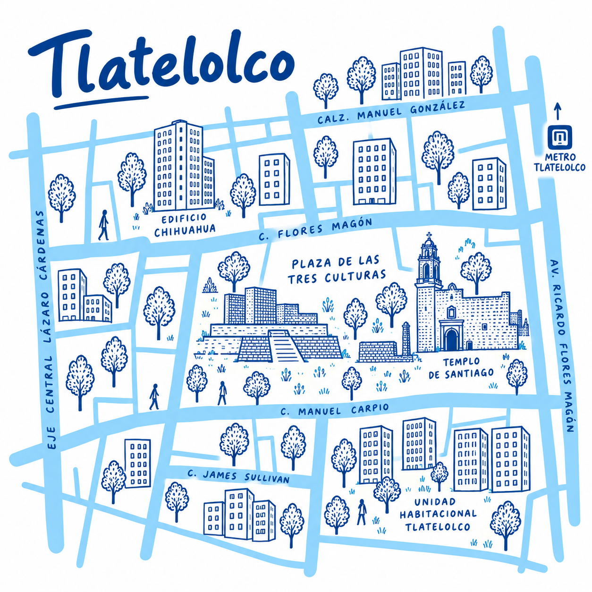

SMALL DATA · CUAUHTÉMOC, CDMX
Entre estary PODER estar
Una visualización de Small Data sobre las condiciones de habitabilidad en la alcaldía Cuauhtémoc.
Recorrimos distintos territorios de Cuauhtémoc para observar qué condiciones influyen en nuestra posibilidad de llegar, utilizar y permanecer en sus espacios.
Porque estar en un lugar no siempre
significa poder habitarlo.
COLORES DE NUESTRAS VARIABLES
LA INVESTIGACIÓN
Lo que los mapas
no cuentan.
Los mapas tradicionales muestran ubicaciones, rutas y servicios, pero no siempre reflejan las condiciones necesarias para permanecer en un lugar.
A través de recorridos y observaciones en la alcaldía Cuauhtémoc reunimos registros sobre nuestra experiencia cotidiana para comprender qué influye en la posibilidad de habitar cada territorio.
La experiencia
también es un dato.
Una mirada situada: nuestros registros no representan la experiencia de toda la población.
¿Qué analizamos?
Áreas del mapa: territorios. Círculos: variables.
¿Cómo se lee el mapa?
El tamaño expresa el nivel
observado de cada variable.
Más grande no siempre significa mejor. En costo significa mayor gasto; en permanencia, más posibilidades de quedarse. Los niveles son valoraciones cualitativas, no índices estadísticos oficiales. Las hipótesis se identifican como «Valoración preliminar»; los datos faltantes no reciben un círculo.
Símbolos de nuestras observaciones
El símbolo identifica el tipo de registro. El círculo expresa el nivel de una variable. Las rutas y condiciones puntuales se muestran donde existe un registro situado.
02 — EXPLORAR
UNA ALCALDÍA · OCHO TERRITORIOSExplora los territorios
de Cuauhtémoc.
Selecciona una zona para descubrir lo que observamos en sus calles, espacios y recorridos.
Ocho territorios,
una misma ciudad.
para acercarte a su recorrido.

No se pudo cargar esta ilustración. Selecciona otro territorio o vuelve a intentarlo.
REGISTROS DEL TERRITORIO
Estas valoraciones describen el territorio; su posición en esta franja no señala un lugar del mapa.
Los pulsos señalan registros disponibles para consultar.
Sin grabación territorial asociada. Escuchar el archivo general ↗
Ilustración original del equipo. Los círculos de la lámina tienen una distribución esquemática, pendiente de validar; no señalan ubicaciones geográficas exactas.
PONER EN PERSPECTIVA
COMPARAR SIN JERARQUIZARUna misma ciudad,
distintas condiciones para estar.
Acerca los recorridos entre sí. Cada círculo corresponde al nivel registrado de una misma variable.
DEL RECORRIDO AL REGISTRO
Lo que nos llevamos
de caminar la ciudad.
Algunas condiciones atravesaron nuestros recorridos. Son observaciones del equipo y lecturas de esa experiencia; no hechos exclusivos de cada territorio.
ARCHIVO FOTOGRÁFICO
Fragmentos de nuestros recorridos.
Una mirada a los espacios, recorridos y situaciones que formaron parte de nuestra observación.
MATERIALES DEL EQUIPOEl archivo sonoro del equipo
La ciudad también se escucha
Elige una grabación para escucharla. Su nombre no establece una ubicación en el mapa.
Fuente: archivo fotográfico y sonoro proporcionado por el equipo de investigación. Ubicaciones y fechas de recorrido sin asociar.
03 — REFLEXIONAR
Llegar es apenas el comienzo.Estar no siempre
significa poder estar.
Durante nuestros recorridos observamos que llegar a un territorio no siempre implica contar con las condiciones necesarias para permanecer en él.
El acceso al transporte, el dinero disponible, los espacios de descanso, la seguridad percibida y los servicios existentes influyeron en nuestra experiencia.
Estas observaciones nos invitan a reconocer que la ciudad puede experimentarse de maneras diferentes según los recursos y necesidades de cada persona.
¿Todos podemos habitar un mismo
territorio de la misma manera?